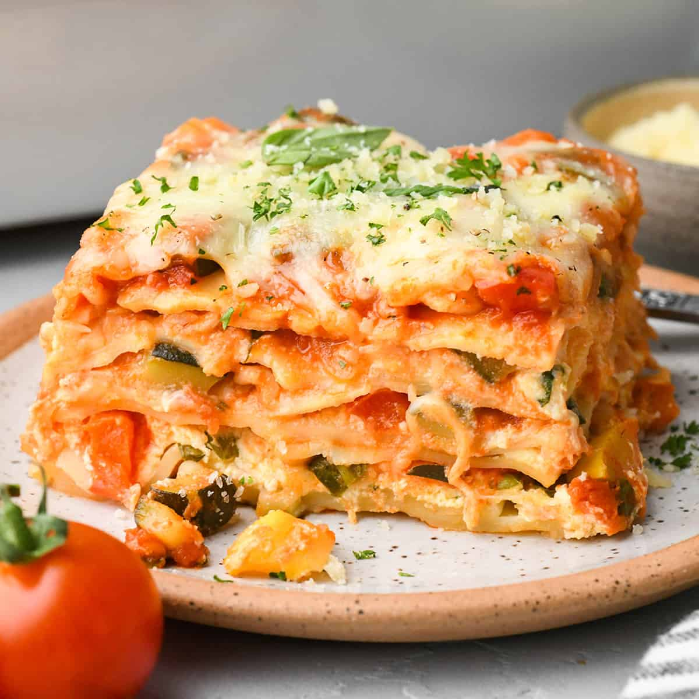

Vegetable Lasagna

Ingredients
- 16 ounces lasagna noodles cooked al dente
- 3 cups Mozzarella Cheese divided
Sauce
- 1/2 onion finely diced
- 1 tablespoon minced garlic
- 1 red bell pepper diced
- 1 zucchini diced
- 1 yellow squash diced
- 2 cups baby spinach chopped
- 26 ounces marinara sauce
- 1/2 teaspoon sea salt
- 1/4 teaspoon pepper
Ricotta Mixture
- 30 ounces Ricotta Cheese
- 3 large eggs
- 1/4 cup Grated Parmesan Cheese
- 1 Tablespoon fresh parsley
- 1/4 cup chopped fresh basil
- 1 cup mozzarella cheese
- 1/2 teaspoon sea salt
- 1/2 teaspoon garlic powder
- 1/4 teaspoon pepper
Topping
- 2 cups mozzarella cheese shredded
- 1/4 cup parmesan cheese
Steps
- Preheat oven to 350 degrees F.
Make The Sauce
- In a 5-quart saucepan, cook the onion, garlic, and bell pepper
over medium-high heat (covered) until the onions are soft
(5 minutes).
- Add zucchini and yellow squash and cook until soft, 3 minutes.
- Stir in marinara sauce, spinach, salt and pepper and heat until the
sauce just begins to boil. Taste and adjust seasonings (salt and
pepper) to your preferences.
- Remove from heat and set aside.
Make The Ricotta Filling
- Combine ricotta, eggs, ¼ cup parmesan cheese, parsley, basil,
1 cup mozzarella cheese, garlic powder, salt and pepper in a large
bowl. Set aside.
Assemble
- Spread 1 cup of the sauce in the bottom of a 9x13” baking dish.
- Top with a layer of lasagna noodles (5 lasagna noodles per layer).
- Spread 1/3 of the ricotta cheese mixture over the noodles,
then spread 1 cup sauce over the cheese.
- Repeat with remaining ingredients, making 3 layers of cheese/sauce.
- Top with the last layer with noodles and the spread the remaining sauce
over the noodles.
- Sprinkle 2 cups mozzarella cheese and ¼ cup parmesan cheese evenly over
the sauce.
Bake, Cool & Serve
- Loosely cover with aluminum foil (tenting it slightly so the foil does not
touch the cheese).
- Bake in the preheated oven for 40 minutes, remove the foil then
bake for an additional 10-15 minutes or until the cheese is melted
and the filling is bubbling.
- Let cool slightly and serve garnished with fresh parsley and basil.